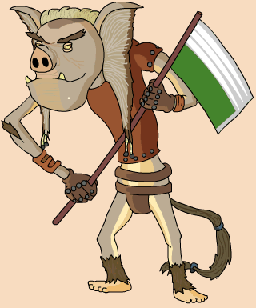

|
Place in Boonta |
6th- 16.42:473 |
|
Classification |
Sneevel |
|
Gender |
Male |
|
Height |
5'3'' |
|
Home World |
Sneeve |
|
Podracer |
Bin Gassi Racing Engines Quadrijet 4Barrel 904E |
When Boles Roor was in his racing prime, he was the winner of the Boonta Eve Classic on two occasions. However, that was a long time ago and now Boles Roor treats podracing as just a hobby, second to his career as a glimmik singer. This can be seen in his pod, which has gone into disrepair under the management of a team of Ishi Tib mechanics. The night before the Boonta, Boles Roor played at the Poodoo Lounge in Mos Espa. During the concert, Boles Roor ended up making a wager with a Toong in the crowd named Ben Quadinaros, betting 5 million peggats (or Wupiupi, as Podracing Tales says) that he would not enter the Boonta Eve Classic. Boles Roor lost the bet, although Ben did not even get past the starting grid. Roor finished the race in sixth place. In order to make up for his bet, Roor had a year long glimmik tour. He eventually drifted into a full time glimmik singer and gave up on podracing, allowing his chief mechanic of the time, Shrivel Braittrand, to become a racer. Boles Roor presumably made a comeback around the time of Episode II: Attack of the Clones, as you see his podracer in a race on the view screen in the Outlander Club.
Clothing in picture based on the Young Jedi Boles Roor Decipher card